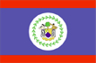

{kind=link}


![[Country map of Belize]](../maps/bh-map.jpg)
| Belize |  |
|
| | |
| Introduction |
Background: Territorial disputes between the UK and Guatemala delayed the independence of Belize (formerly British Honduras) until 1981. Guatemala refused to recognize the new nation until 1992. Tourism has become the mainstay of the economy. The country remains plagued by high unemployment, growing involvement in the South American drug trade, and increased urban crime.
| Geography |
Location: Middle America, bordering the Caribbean Sea, between Guatemala and Mexico
Geographic coordinates: 17 15 N, 88 45 W
Map references: Central America and the Caribbean
Area:
total:
22,960 sq km
land:
22,800 sq km
water:
160 sq km
Area - comparative: slightly smaller than Massachusetts
Land boundaries:
total:
516 km
border countries:
Guatemala 266 km, Mexico 250 km
Coastline: 386 km
Maritime claims:
exclusive economic zone:
200 nm
territorial sea:
12 nm in the north, 3 nm in the south; note - from the mouth of the Sarstoon River to Ranguana Cay, Belize's territorial sea is 3 nm; according to Belize's Maritime Areas Act, 1992, the purpose of this limitation is to provide a framework for the negotiation of a definitive agreement on territorial differences with Guatemala
Climate: tropical; very hot and humid; rainy season (May to February)
Terrain: flat, swampy coastal plain; low mountains in south
Elevation extremes:
lowest point:
Caribbean Sea 0 m
highest point:
Victoria Peak 1,160 m
Natural resources: arable land potential, timber, fish, hydropower
Land use:
arable land:
2%
permanent crops:
1%
permanent pastures:
2%
forests and woodland:
92%
other:
3% (1993 est.)
Irrigated land: 20 sq km (1993 est.)
Natural hazards: frequent, devastating hurricanes (September to December) and coastal flooding (especially in south)
Environment - current issues: deforestation; water pollution from sewage, industrial effluents, agricultural runoff; solid waste disposal
Environment - international agreements:
party to:
Biodiversity, Climate Change, Desertification, Endangered Species, Hazardous Wastes, Law of the Sea, Ozone Layer Protection, Marine Dumping, Ship Pollution, Wetlands, Whaling
signed, but not ratified:
none of the selected agreements
Geography - note: only country in Central America without a coastline on the North Pacific Ocean
| People |
Population: 249,183 (July 2000 est.)
Age structure:
0-14 years:
43% (male 54,009; female 51,945)
15-64 years:
54% (male 68,052; female 66,366)
65 years and over:
3% (male 4,298; female 4,513) (2000 est.)
Population growth rate: 2.75% (2000 est.)
Birth rate: 32.29 births/1,000 population (2000 est.)
Death rate: 4.81 deaths/1,000 population (2000 est.)
Net migration rate: 0 migrant(s)/1,000 population (2000 est.)
Sex ratio:
at birth:
1.05 male(s)/female
under 15 years:
1.04 male(s)/female
15-64 years:
1.03 male(s)/female
65 years and over:
0.95 male(s)/female
total population:
1.03 male(s)/female (2000 est.)
Infant mortality rate: 25.97 deaths/1,000 live births (2000 est.)
Life expectancy at birth:
total population:
70.91 years
male:
68.66 years
female:
73.28 years (2000 est.)
Total fertility rate: 4.14 children born/woman (2000 est.)
Nationality:
noun:
Belizean(s)
adjective:
Belizean
Ethnic groups: mestizo 44.1%, Creole 31%, Maya 9.2%, Garifuna 6.2%, other 9.5%
Religions: Roman Catholic 62%, Protestant 30% (Anglican 12%, Methodist 6%, Mennonite 4%, Seventh-Day Adventist 3%, Pentecostal 2%, Jehovah's Witnesses 1%, other 2%), none 2%, other 6% (1980)
Languages: English (official), Spanish, Mayan, Garifuna (Carib), Creole
Literacy:
definition:
age 15 and over can read and write
total population:
70.3%
male:
70.3%
female:
70.3% (1991 est.)
note:
other sources list the literacy rate as high as 75%
| Government |
Country name:
conventional long form:
none
conventional short form:
Belize
former:
British Honduras
Data code: BH
Government type: parliamentary democracy
Capital: Belmopan
Administrative divisions: 6 districts; Belize, Cayo, Corozal, Orange Walk, Stann Creek, Toledo
Independence: 21 September 1981 (from UK)
National holiday: Independence Day, 21 September (1981)
Constitution: 21 September 1981
Legal system: English law
Suffrage: 18 years of age; universal
Executive branch:
chief of state:
Queen ELIZABETH II (since 6 February 1952), represented by Governor General Sir Colville YOUNG (since 17 November 1993)
head of government:
Prime Minister Said MUSA (since 27 August 1998); Deputy Prime Minister John BRICENO (since 1 September 1998)
cabinet:
Cabinet appointed by the governor general on the advice of the prime minister
elections:
none; the monarch is hereditary; governor general appointed by the monarch; governor general appoints the member of the House of Representatives who is leader of the majority party to be prime minister
Legislative branch:
bicameral National Assembly consists of the Senate (eight members, five appointed on the advice of the prime minister, two on the advice of the leader of the opposition, and one by the governor general; members are appointed for five-year terms); and the House of Representatives (29 seats; members are elected by direct popular vote to serve five-year terms)
elections:
House of Representatives - last held 27 August 1998 (next to be held NA August 2003)
election results:
percent of vote by party - NA; seats by party - PUP 26, UDP 3
Judicial branch: Supreme Court, the chief justice is appointed by the governor general on advice of the prime minister
Political parties and leaders: People's United Party or PUP [Said MUSA]; United Democratic Party or UDP [Manuel ESQUIVEL, Dean BARROW]
Political pressure groups and leaders: Society for the Promotion of Education and Research or SPEAR [Assad SHOMAN]; United Worker's Front
International organization participation: ACP, C, Caricom, CDB, ECLAC, FAO, G-77, IADB, IBRD, ICAO, ICFTU, ICRM, IDA, IFAD, IFC, IFRCS, ILO, IMF, IMO, Intelsat (nonsignatory user), Interpol, IOC, IOM (observer), ITU, LAES, NAM, OAS, OPANAL, UN, UNCTAD, UNESCO, UNIDO, UPU, WCL, WHO, WMO, WTrO
Diplomatic representation in the US:
chief of mission:
Ambassador James Schofield MURPHY
chancery:
2535 Massachusetts Avenue NW, Washington, DC 20008
telephone:
[1] (202) 332-9636
FAX:
[1] (202) 332-6888
consulate(s) general:
Los Angeles
Diplomatic representation from the US:
chief of mission:
Ambassador Carolyn CURIEL
embassy:
Gabourel Lane and Hutson Street, Belize City
mailing address:
P. O. Box 286, Unit 7401, APO AA 34025
telephone:
[501] (2) 77161 through 77163
FAX:
[501] (2) 30802
Flag description: blue with a narrow red stripe along the top and the bottom edges; centered is a large white disk bearing the coat of arms; the coat of arms features a shield flanked by two workers in front of a mahogany tree with the related motto SUB UMBRA FLOREO (I Flourish in the Shade) on a scroll at the bottom, all encircled by a green garland
| Economy |
Economy - overview: The small, essentially private enterprise economy is based primarily on agriculture, agro-based industry, and merchandising, with tourism and construction assuming greater importance. Sugar, the chief crop, accounts for nearly half of exports, while the banana industry is the country's largest employer. The government's tough austerity program in 1997 resulted in an economic slowdown that continued in 1998. The trade deficit has been growing, mostly as a result of low export prices for sugar and bananas. The new government faces important challenges to economic stability. Rapid action to improve tax collection has been promised, but a lack of progress in reining in spending could bring the exchange rate under pressure. The tourist and construction sectors strengthened in early 1999, leading to a preliminary estimate of revived growth at 4%.
GDP: purchasing power parity - $740 million (1999 est.)
GDP - real growth rate: 4% (1999 est.)
GDP - per capita: purchasing power parity - $3,100 (1999 est.)
GDP - composition by sector:
agriculture:
22%
industry:
22%
services:
56% (1998)
Population below poverty line: NA%
Household income or consumption by percentage share:
lowest 10%:
NA%
highest 10%:
NA%
Inflation rate (consumer prices): -0.9% (1999 est.)
Labor force:
71,000
note:
shortage of skilled labor and all types of technical personnel (1997 est.)
Labor force - by occupation: agriculture 38%, industry 32%, services 30% (1994)
Unemployment rate: 14.3% (1998)
Budget:
revenues:
$140 million
expenditures:
$180 million, including capital expenditures of $NA (1997)
Industries: garment production, food processing, tourism, construction
Industrial production growth rate: -4.4% (1998)
Electricity - production: 175 million kWh (1998)
Electricity - production by source:
fossil fuel:
57.14%
hydro:
42.86%
nuclear:
0%
other:
0% (1998)
Electricity - consumption: 163 million kWh (1998)
Electricity - exports: 0 kWh (1998)
Electricity - imports: 0 kWh (1998)
Agriculture - products: bananas, coca, citrus, sugarcane; lumber; fish, cultured shrimp
Exports: $150 million (f.o.b., 1998)
Exports - commodities: sugar, bananas, citrus fruits, clothing, fish products, molasses, wood
Exports - partners: US 45.5%, UK 30%, EU 10%, Caricom 4.2%, Mexico 3.4%, Canada 3.3% (1997)
Imports: $320 million (c.i.f., 1998)
Imports - commodities: machinery and transportation equipment, manufactured goods, food, fuels, chemicals, pharmaceuticals
Imports - partners: US 52%, Mexico 13%, UK 5% (1997)
Debt - external: $380 million (1997)
Economic aid - recipient: $23.4 million (1995)
Currency: 1 Belizean dollar (Bz$) = 100 cents
Exchange rates: Belizean dollars (Bz$) per US$1 - 2.0000 (fixed rate)
Fiscal year: 1 April - 31 March
| Communications |
Telephones - main lines in use: 29,600 (1996)
Telephones - mobile cellular: 1,237 (1995)
Telephone system:
above-average system
domestic:
trunk network depends primarily on microwave radio relay
international:
satellite earth station - 1 Intelsat (Atlantic Ocean)
Radio broadcast stations: AM 1, FM 12, shortwave 0 (1998)
Radios: 133,000 (1997)
Television broadcast stations: 2 (1997)
Televisions: 41,000 (1997)
Internet Service Providers (ISPs): NA
| Transportation |
Railways: 0 km
Highways:
total:
2,872 km
paved:
488 km
unpaved:
2,384 km (1998 est.)
Waterways: 825 km river network used by shallow-draft craft; seasonally navigable
Ports and harbors: Belize City, Big Creek, Corozol, Punta Gorda
Merchant marine:
total:
414 ships (1,000 GRT or over) totaling 1,647,452 GRT/2,339,134 DWT
ships by type:
bulk 36, cargo 275, chemical tanker 7, container 9, liquified gas 1, passenger 1, passenger/cargo 2, petroleum tanker 51, refrigerated cargo 14, roll-on/roll-off 9, short-sea passenger 3, specialized tanker 4, vehicle carrier 2 (1999 est.)
note:
a flag of convenience registry; includes ships of 7 countries: Cuba 2, Cyprus 1, Greece 1, Singapore 2, UAE 12, UK 1, and US 1 (1998 est.)
Airports: 44 (1999 est.)
Airports - with paved runways:
total:
3
1,524 to 2,437 m:
1
under 914 m:
2 (1999 est.)
Airports - with unpaved runways:
total:
41
2,438 to 3,047 m:
1
914 to 1,523 m:
10
under 914 m:
30 (1999 est.)
| Military |
Military branches: Belize Defense Force (includes Ground Forces, Maritime Wing, Air Wing, and Volunteer Guard), Belize National Police
Military manpower - military age: 18 years of age
Military manpower - availability:
males age 15-49:
60,482 (2000 est.)
Military manpower - fit for military service:
males age 15-49:
35,874 (2000 est.)
Military manpower - reaching military age annually:
males:
2,735 (2000 est.)
Military expenditures - dollar figure: $15 million (FY97/98)
Military expenditures - percent of GDP: 2% (FY97/98)
| Transnational Issues |
Disputes - international: territory in Belize claimed by Guatemala; precise alignment of boundary in dispute
Illicit drugs: transshipment point for cocaine; small-scale illicit producer of cannabis for the international drug trade; minor money-laundering center